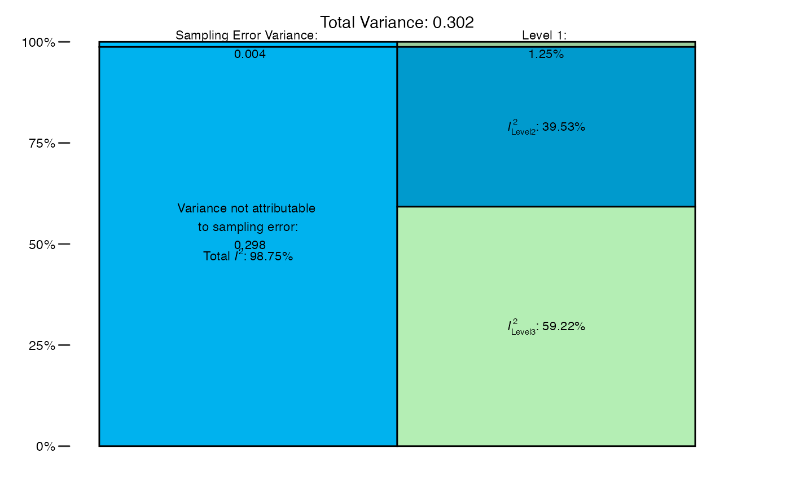

Calculate I-squared values and variance distribution for multilevel meta-analysis models
mlm.variance.distribution.RdThis function calculates values of \(I^2\) and the variance distribution for multilevel meta-analysis
models fitted with rma.mv.
Value
Returns a data frame containing the results. A plot summarizing the variance distribution and \(I^2\) values can be generated using plot.
Details
This function estimates the distribution of variance in a three-level meta-analysis
model (fitted with the rma.mv function). The share of variance attributable to
sampling error, within and between-cluster heterogeneity is calculated,
and an estimate of \(I^2\) (total and for Level 2 and Level 3) is provided. The function uses the formula by
Cheung (2014) to estimate the variance proportions attributable to each model component and to derive the \(I^2\) estimates.
References
Harrer, M., Cuijpers, P., Furukawa, T.A, & Ebert, D. D. (2019). Doing Meta-Analysis in R: A Hands-on Guide. DOI: 10.5281/zenodo.2551803. Chapter 12.
Cheung, M. W. L. (2014). Modeling dependent effect sizes with three-level meta-analyses: a structural equation modeling approach. Psychological Methods, 19(2), 211.
Examples
# Use dat.konstantopoulos2011 from the "metafor" package
library(metafor)
#> Loading required package: Matrix
#> Loading required package: numDeriv
#>
#> Loading the 'metafor' package (version 4.8-0). For an
#> introduction to the package please type: help(metafor)
# Build Multilevel Model (Three Levels)
m = rma.mv(yi, vi, random = ~ 1 | district/school, data=dat.konstantopoulos2011)
# Calculate Variance Distribution
mlm.variance.distribution(m)
#> % of total variance I2
#> Level 1 4.812686 ---
#> Level 2 31.862476 31.86
#> Level 3 63.324838 63.32
#> Total I2: 95.19%
# Use alias 'var.comp' and 'Chernobyl' data set
data("Chernobyl")
m2 = rma.mv(yi = z, V = var.z, data = Chernobyl, random = ~ 1 | author/es.id)
res = var.comp(m2)
# Print results
res
#> % of total variance I2
#> Level 1 1.254966 ---
#> Level 2 39.525499 39.53
#> Level 3 59.219535 59.22
#> Total I2: 98.75%
# Generate plot
plot(res)
